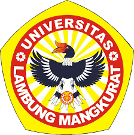

|  |
Teknologi Informasi ULM
|
Visi Program Studi Teknologi Informasi
Mewujudkan Program Studi di bidang Teknologi Informasi dan Komunikasi dalam menunjang pengoptimalkan potensi sumber daya alam Kalimantan.
Misi Program Studi S1 Teknologi Informasi
Untuk menyelenggarakan pendidilkan dan pengajaran yang bermutu dibidang Teknologi Informasi sehingga dapat menghasilkan lulusan yang kompeten dan berdaya saing global
Mengembangkan ilmu pengetahuan di bidang teknologi informasi melalui kegiatan penelitian yang inovatif dan aplikatif terutama dalam menunjagn pengoptimalan sumber daya alam Kalimantan. Berperan aktif dalam kegiatan pengabdian kepada masyarakat
dan kegiatan kerja sama secara berkesinambungan dengan stakeholder. Menjalin kemitraan dengan institusi dalam dan luar negeri.
| Keahlian |
Mata Kuliah Unggulan |
|
Semester 1
|
| Pengantar Teknologi Web |
| Pengantar Teknologi Informasi |
| Konsep Pemrograman |
| Logika Algoritma |
| Pengantar Organisasi dan Arsitektur Komputer |
| Aljabar Linier |
| Kalkulus |
| Bahasa Indonesia |
Teknik ULM
Fakultas Teknik Universitas Lambung Mangkurat (ULM) didirikan pada tahun 1965.
Fakultas Teknik merupakan Fakultas ke-7 yang didirikan ULM setelah Fakultas Hukum (1960),
Fakultas Ekonomi t(1960), Fakultas Sosial (1960), Fakultas Pertanian (1961),
Fakultas Perikanan (1964),
dan Fakultas Kehutanan (1964). Pada saat Fakultas Teknik didirikan, ULM sudah menjadi Universitas Negeri yang memiliki 2 lokasi,
yaitu Banjarmasin dan Banjarbaru. Fakultas Teknik dibentuk pertama kali di Banjarbaru.
Beberapa jurusan yang terdapat di Fakultas Teknik ULM adalah sebagai berikut:
- Program Studi Teknik Sipil (sejak 1 Juli 1966, berkampus di Banjarbaru, saat ini terakreditasi B)
- Program Studi Teknik Arsitektur (sejak 22 Oktober 1998, berkampus di Banjarbaru, saat ini terakreditasi B)
- Program Studi Teknik Pertambangan (sejak 21 September 2004-Banjarbaru, saat ini terakreditasi C)
- Program Studi Teknik Kimia (sejak 21 September 2004, berkampus di Banjarbaru, saat ini terakreditasi B)
- Program Studi Teknik Lingkungan (sejak 23 Agustus 2006, berkampus di Banjarbaru, saat ini terakreditasi B)
- Program Studi Teknik Mesin (sejak 19 Oktober 2006, berkampus di Banjarbaru, saat ini terakreditasi C)
- Program Studi Teknologi Informasi (sejak 17 Oktober 2014, berkampus di Banjarmasin, saat ini terakreditasi C)
- Program Studi Teknik Sipil (sejak 28 September 2001, berkampus di Banjarbaru, saat ini terakreditasi C)